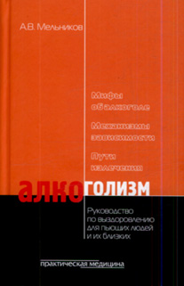

Как бросить пить ...

По материалам книги " АЛКОГОЛИЗМ . Руководство по выздоровлению для пьющих людей и их близких "." Александра Витальевича Мельникова . "
А также из других источников Интернет
Уважаемый Читатель - после ознакомления с Книгой
рекомендую Вам заказать ее бумажное издание.
В книге представлена эффективная программа избавления от алкогольной зависимости. Рассматриваются причины и факторы, приводящие к развитию зависимости от алкоголя. Описаны стадии болезни и ее последствия, приведены клинические примеры. В отдельных главах автор обсуждает вопросы лечения как составные части процесса избавления от зависимости и профилактики срывов.
Для широкого круга читателей, сталкивающихся с данной проблемой, а также врачей, психологов.
От Автора Сайта : Я сам просил пить, поэтому подтверждаю , если с алкоголем есть проблемы - то эта очень полезная книга должна стать НАСТОЛЬНОЙ и должны быть подробно изучена и должна стать руководством к практическим действиям ...